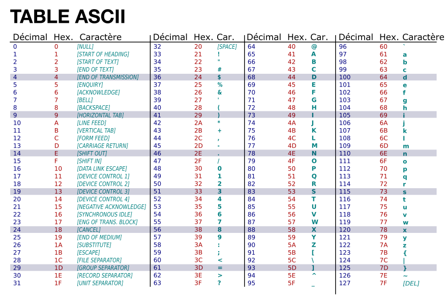
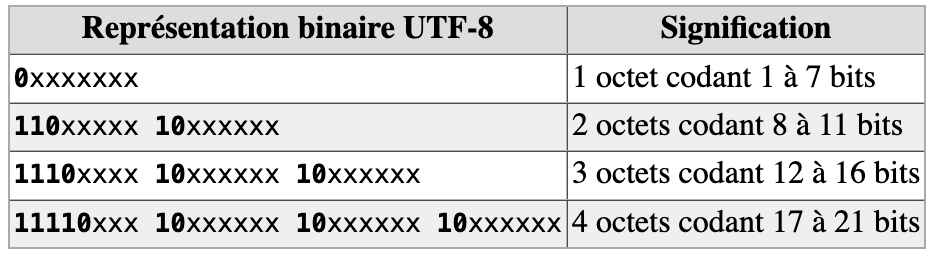
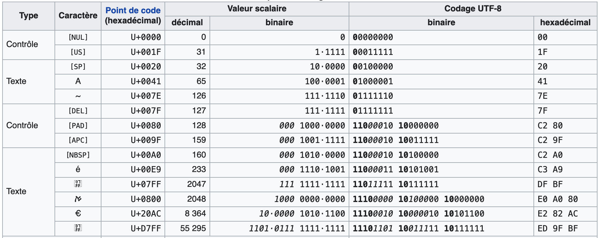

3. Le texte¶
Toute l’information est représentée dans un ordinateur par des nombres encodés sous forme binaire par des 0 et des 1. Se pose alors la question de la représentation du texte, ne serait-ce que parce que la communication entre les utilisateurs et les ordinateurs s’opère essentiellement sous forme textuelle.
3.1. Principe¶
La solution est simple : comme on sait déjà représenter les nombre en binaire, on associe chaque caractère à un nombre qui pourra être représenté en binaire.
Caractère |
Décimal |
Hexadécimal |
Binaire |
|---|---|---|---|
A |
65 |
41 |
01000001 |
B |
66 |
42 |
01000010 |
C |
67 |
43 |
01000011 |
… |
… |
… |
… |
Z |
90 |
5A |
01011010 |
Chaque caractère frappé sur le clavier est représenté par le code correspondant dans ce tableau.
Chacun des caractères de la phrase que vous lisez (qu’on nomme chaîne de caractères) a ainsi été stocké, transmis et manipulé par l’ordinateur sous la forme d’une séquence de 0 et 1.
Lorsqu’il s’agit de représenter ce texte à l’écran ou à l’impression, les logiciels utilisent la table dans l’autre sens pour trouver le caractère correspondant au nombre binaire.
En plus des lettres, les caractères qui représentent les chiffres sont eux-mêmes listés dans la table de conversion. Contre-intuitivement, la valeur binaire du caractère représentant un chiffre ne correspond pas au chiffre lui-même.
Caractère |
Décimal |
Hexadécimal |
Binaire |
|---|---|---|---|
0 |
48 |
30 |
00110000 |
1 |
49 |
31 |
00110001 |
… |
… |
… |
… |
9 |
57 |
39 |
00111001 |
Ces tables donnent également une représentation des caractères de ponctuation et des symboles mathématiques, ainsi que des caractères non-imprimables comme le retour à la ligne.
En réalité, il n’existe pas une table de conversion unique, mais des dizaines de tables de conversion. En effet, les caractères utilisés dans les différents pays diffèrent et donc les tables utilisées dans un pays (par exemple les Etats-Unis) ne conviennent pas pour la France (à cause des accents) et encore moins pour la Russie ou la Chine. Certaines tables ont été proposées à l’origine par des constructeurs d’ordinateurs ou des éditeurs de systèmes d’exploitation. Voici les tables les plus importantes.
3.2. Table ASCII¶
Le code américain normalisé pour l’échange d’information ASCII (pour American Standard Code for Information Interchange) est apparu dans les année 1960. Cette table représentait chaque caractère avec 7 bits, et pouvait donc contenir \(2^{7}\) 128 caractères différents, ce qui suffisait pour les 26 lettres de l’alphabet en minuscule et majuscule, les 10 chiffres et les signes de ponctuations. De nos jours, cette table est encore largement utilisée mais sur 8 bits (le bit de plus à gauche est laissé toujours à 0). Cela permet de faire correspondre chaque caractère à un octet qui peut être représenter en hexadécimal par un nombre à deux chiffre. Cette table à l’avantage de prendre peu de place en mémoire, mais sont principal principal défaut est de ne pas prendre en compte les caractères qui n’existent pas dans la langue anglaise, ne serait-ce que les lettres accentuées.
{kind=link}
Tab. 1 La table de représentation des caractères ASCII
Ainsi, pour représenter du texte en binaire en utilisant la table ASCII, on convertit chaque caractère, y compris les espaces et la ponctuation en hexadécimal puis en binaire. Par exemple, pour coder “A l’aide!” en binaire:
Le texte “A l’aide!” peut donc être représenté par en binaire par la séquence de bits
01000001 00100000 01101100 00100111 01100001 01101001 01100100 01100101 00100001.
(Les espaces qui séparent les octets sont là pour nous aider à la lecture, mais ne sont pas représentés dans l’ordinateur.). Pour convertir du binaire en texte, il suffit séparer la séquence de bit en groupes de 8 bits et de convertir chaque paire d’octet en hexadécimal puis dans d’afficher le caractère correspondant en consultant la table.
A vous!️📒
À l’aide de la table ASCII, codez en binaire la phrase suivante «L’an qui vient !».
Voici maintenant une exclamation codée en binaire : 01000010 01110010 01100001 01110110 01101111 00100001. Retrouvez cette exclamation !
Peut-on coder en binaire la phrase «Un âne est-il passé par là ?» à l’aide de la table ASCII (justifiez la réponse) ?
Que se passe-t-il si un bit d’une séquence de bits encodant un texte en ascii disparaît (par exemple lors de la transmission). Peut-on quand même comprendre le texte transmis?
Le saviez-vous ?
Dès l’introduction de l’encodage ASCII, et jusqu’à aujourd’hui, une pratique répandue dans les milieux informatiques est d’utiliser les caractères ASCII comme support de créativité artistique. C’est ce qu’on appelle l’ASCII art.
Les caractères ont un poids minimal en code binaire, c’est donc une façon très efficace de transmettre une information visuelle.
Cet outil vous permet de transformer n’importe quel texte en ASCII.
La vidéo suivante présente “l’asciiquarium”, un aquarium en ASCII dans le terminal.
Au cours du XXe siècle, des tables multiples, mutuellement incompatibles, ont émergé : une table pour les européens, une autre pour les Japonais et ainsi de suite.
Progressivement, notamment avec l’émergence du Web au cours des années 1990, l’augmentation de l’interconnexion des ordinateurs personnels a amené au début des années 2000 à la mise en place d’une énorme table intégrant le contenu de toutes les tables existantes, via le standard UTF.
3.3. Standard UTF¶
Le standard Unicode UTF (Universal Character Set Transformation Format) s’est imposé pour l’échange, car il permet d’agréger sur 8 bits, 16 bits ou 32 bits par caractère la totalité des caractères utilisés dans toutes les langues humaines… et même extraterrestres, puisque le Klingon est également intégré.
Les caractères liés à l’édition des partitions de musique ou les émojis sont également intégrés.
Variantes¶
Pour éviter de consommer 32 bits par caractère, des variantes plus compactes ont été mises à disposition.
La plus connue – des européens, puisqu’elle regroupe les caractères qui nous concernent – est la table UTF-8. Elle se concentre sur les premiers 8 bits de la table UTF complète. Par sa nature, UTF-8 est d’un usage très répandu sur internet et dans les systèmes échangeant de l’information. Il s’agit également du codage le plus utilisé dans les systèmes de logiciels libres pour gérer le plus simplement possible des textes et leurs traductions dans tous les systèmes d’écritures et alphabets du monde. Les navigateurs internet d’aujourd’hui utilisent le codage UTF-8 et les concepteurs de sites prenent en compte cette même norme ; c’est pourquoi il y a de moins en moins de problèmes de compatibilité. Toutefois, toutes ces différentes normes et leurs incompatibilités sont la cause des problèmes que l’on rencontre parfois avec les caractères accentués. Il est donc préférable pour la rédaction de courriels à l’étranger, de n’utiliser que des caractères non accentués.
UTF-8 est donc un encodage des caractères basé sur UNICODE, de longueur variable qui utilise de 1 à 4 octets par symbole.
Comment s’opère le codage sur plusieurs octets ?¶
En UTF-8, chaque point de code de 0 à 127 est stocké dans un seul octet. Seuls les points de code 128 et supérieurs sont stockés en utilisant 2, 3 ou 4 octets. Chaque octet commence alors par quelques bits qui indiquent s’il s’agit d’un point de code à un octet, d’un point de code à plusieurs octets ou de la continuation d’un point de code à plusieurs octets :
0xxx xxxx : c’est un code US-ASCII à un seul octet (permettant donc d’encoder les 127 premiers caractères).
Les points de code multi-octets commencent chacun par quelques bits à 1 du premier octet en partant de la gauche, suivis d’un bit à 0, et qui vont dire si l’on doit lire l’octet suivant, ou les deux ou les trois suivants, pour comprendre l’encodage global. Par exemple, si l’octet le plus à gauche s’écrit :
110x xxxx : cela indique que le message global est encodé sur 1+1=2 octets, et donc qu’un deuxième octet suit.
1110 xxxx : cela indique que le message global est encodé sur 1+1+1=3 octets, et donc qu’un deuxième puis un troisième octet suivent.
1111 0xxx : cela indique que le message global est encodé sur 4 octets, et donc qu’un deuxième puis un troisième puis un quatrième octet suivent.
Enfin, les octets qui suivent ces codes de démarrage sont tous de la forme : 10xx xxxx. Les bits représentés par le caractère «x» représentent ce que l’on appelle la charge utile, c’est à dire l’encodage du caractère proprement dit.
Tab. 2 Définition du nombre d’octets utilisés
Puisqu’on peut dire quel type d’octet on regarde à partir des premiers bits du premier octet à gauche, alors même si quelque chose est altéré quelque part, la séquence entière n’est pas perdue : ce codage est appelé codage auto-synchronisant.
Tab. 4 Extrait de la table de représentation UTF-8
A vous!
Ouvrez un navigateur Internet (Firefox, …) et essayez de trouver dans les menus quel encodage de caractère (c’est-à-dire quelle table) ce navigateur utilise. Une recherche sur internet peut vous aider.
Essayez de changer l’encodage de caractère selon diverses possibilités proposées. Qu’observez-vous et comment pouvez-vous l’expliquer?
Pour aller plus loin. ️📒
On transmet le texte suivant codé en UTF-8:
11000011 1000000 00100000 01100011 01100101 01110100 00100000 11000011 10101001 01110100 11000011 10101001 0010001
Séparez ce texte en ses différentes caractères et vérifiez qu’il en compte bien 9.
Décodez les caractères qui peuvent l’être grâce à la table ASCII
Sachant qu’en UTF-8 le caractère “é” se code par “11000011 10101001”, essayer de décoder l’entier du message.